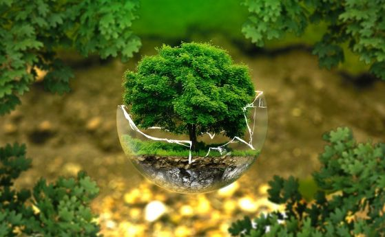

За нас
Водещите принципи, на които се основава работата ни са: природосъобразен и равнопоставен живот, солидарност и взаимопомощ, дух на сътрудничество, консенсусен модел за взимане на решения, екологична и социална справедливост.
Член сме на международната мрежа Friends of the Earth (Приятели на Земята), която обединява 74 организации, 5000 местни активистки групи и над 2 милиона поддръжници от цял свят. Заедно водим кампании по най-наболелите екологични и социални конфликти по света и у нас. Оспорваме настоящия модел на икономическа и корпоративна глобализация и предлагаме алтернативи за устойчиви общности с отговорно отношение към хората и околната среда.
Нашите цели
1) Да създаваме и предлагаме алтернативни модели за разрешаване на екологични проблеми.
2) Да събираме и разпространяваме информация свързана с проблемите на околната среда.
3) Да даваме гласност на такава информация чрез подходящи форми.
4) Да формираме природозащитна култура, и да съдействаме за повишаване на общественото съзнание относно застрашеното състояние на живота на планетата.
Дейност на общината
Дирекция „Екология и опазване на околната среда“ осъществява ангажиментите на Кмета на Община Варна в областта на националното законодателство по околна среда, участва в координирането на дейностите при осъществяване на проекти и програми на местно ниво, ориентирани към опазване компонентите на околната среда, повишаване на ресурсната ефективност, включително на предвидените инициативи в Пакета за кръгова икономика на Европейския съюз. Подпомага работата на Кмета на Община Варна чрез дейността на специализираните три структурни звена - отдела:
Отдел “Опазване на околната среда”
Отдел “Управление на отпадъците”
Отдел „Контрол и опазване чистотата на обществените територии"